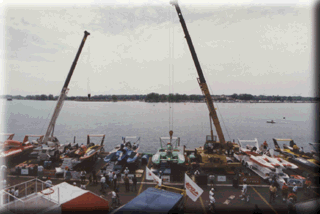

|
The Pit Tower seating is directly on top of the Hot Pit Tower. In the first two photos, it is the larger white tent at the top and front center of Pit Tower. From here there is a fantastic view of the race course, along with a complete birds-eye view of the pit action.
![[Pit Tower Photo]](pittwr1.gif)
![[Pit Tower Photo]](pittwr2.gif)

All contents Copyright © 1997 Spirit of Detroit THUNDERFEST, except where noted.
Web page created by Brian Reed.
|